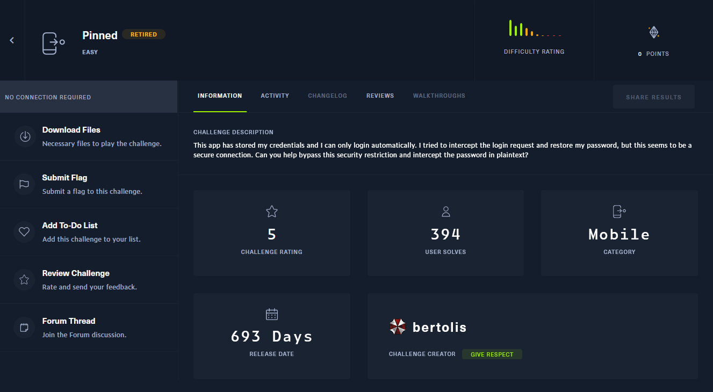
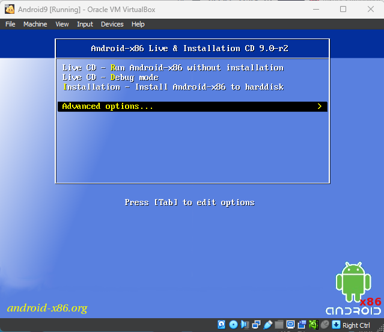
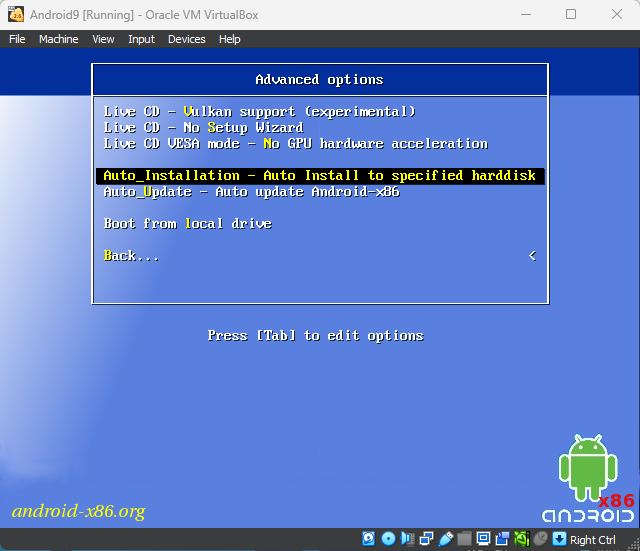
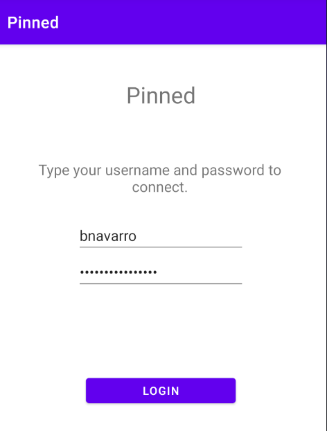
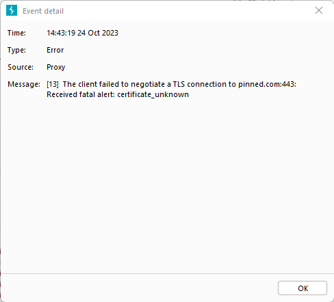
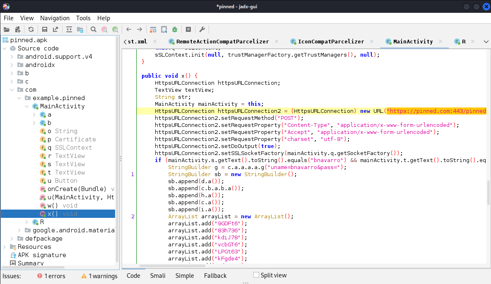
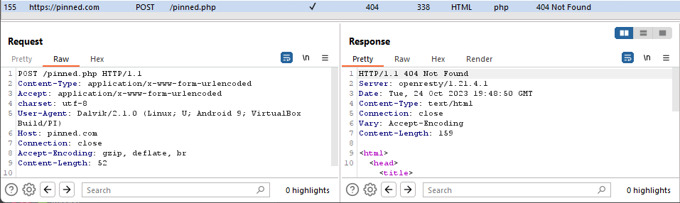

The Challenge

Description: This app has stored my credentials and I can only login automatically. I tried to intercept the login request and restore my password, but this seems to be a secure connection. Can you help bypass this security restriction and intercept the password in plaintext?
Downloading the zip file, we are presented with an apk and a note.
1. Install this application in an API Level 29 or earlier (i.e. Android 10.0 (Google APIs)).
The Setup
This is what I used. I'm sure there are more than a singular path to get to the destination (the flag).
VirtualBox: - Kali VM - This is where we are running our Android Dev tools, Frida, Burp Suite, jadx-gui, etc - Android 9 VM - This is the host we are going to use to install the apk and run the application
Kali VM:
Straight out of the box from OffSec, things should be good with a few of these additions:
sudo apt install jadx- used to decompile apk files and more JADX - GitHubsudo apt install adb- used to communicate with our Android devicesudo apt install python3-venv- used to create a virtual environment for frida Frida - Installation:sudo mkdir /opt/frida-on-venvcd /opt/frida-on-venvsudo python3 -m venv fridasource frida/bin/activatesudo pip3 install frida-tools
Burp Suite - Community Edition is fine, start it up and add a new Proxy Listener on the Kali VM IP so we can use it on the Android VM later.
Android VM:
Here is what I found regarding getting an Android VM up and running on VirtualBox:
VirtualBox settings:
- New Linux machine - Linux 2.6 / 3.x / 4.x - also matching your architecture.
- RAM - Ideally 2GB
- Hard Drive - 8 GB
Further system settings, after initial setup:
- Processor - 1
- Display - VBoxVGA
- Storage - Android-x86 ISO
For the installation of the Android OS, I ran the auto_installation from the advanced options.
 
Post OS installation, I set up the proxy in the Android Settings.
Finally, I recommend setting the network settings of both the Kali VM and the Android VM to the Bridged Adapter. This way, I could run Burp Suite on the Kali VM and use adb to connect to the Android VM IP address later.
Putting things in motion:
I installed the Pinned.apk via adb:
- adb connect <ip>
- adb install ./pinned.apk
I opened the application and found a login page:

From there, I set up Burp Suite Communicty on the Kali VM to capture the traffic from the Android VM. I hit the login button on the Pinned application. The only change in the UI was a message below the button of "You are logged in."
I did also notice this error in Burp Suite:

I checked out the Pinned.apk using jadx and found the same URL:

It took me a bit in jadx-gui to line up that w() was the certificate it was loading onClick. Since Burp Suite didn't have this certificate, it caused a proxy error.
I had heard of certificate pinning and bypassing cert pinning so off to bing I went. I came across frida and cert bypassing. Having never used frida, I needed to get that up and going.
Frida:
Here we can start leveraging Frida's Android tutorial:
Grab the latest frida-server in the architecture of your Android device:
- For mine, I happened to use
frida-server-X.X.X-android-x86_64.xz
Unpackage the frida-server:
unxz frida-server-X.X.X-android-x86_64.xz
Connect to the Android Device, from Kali:
adb connect <IP>adb root- this might be required, so I ran itadb push frida-server /data/local/tmp/adb shell "chmod 755 /data/local/tmp/frida-server"adb shell "/data/local/tmp/frida-server &"
Getting the running processes/apps:
frida-ps -U
I tried another script and didn't have any success. I found this script in my searching:
Once I created the js file, I ran the following command:
frida -U -f com.example.pinned -l hooked.js
com.example.pinned- this comes from the Identifer from runningfrida-ps -U
At this point we should be able to test hitting the login button on the Pinned application and see the request show up in the HTTP history. The flag is in the POST request body (not shown).

If you are just dipping your toe in the world of mobile challenges, give this a go and get that flag. It's one thing to read about it. It's another to do it.